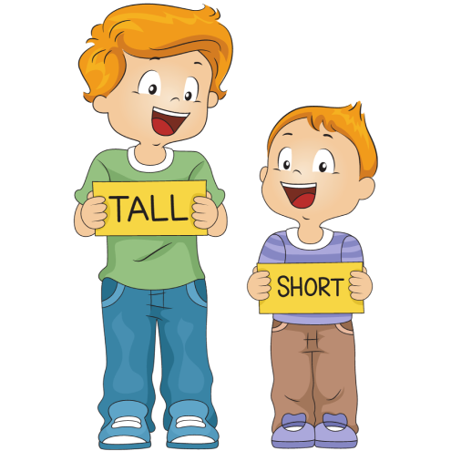
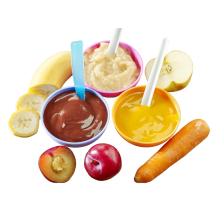
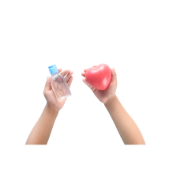
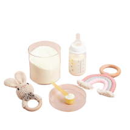
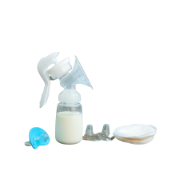

Stunting adalah kondisi ketika anak
kurang tumbuh tinggi akibat makanan yang kurang bergizi, terutama pada 1.000 hari pertama kehidupannya,
mulai dari dalam kandungan hingga usia dua tahun. Ini membuat anak bisa lebih pendek dari teman-temannya

Apa
penyebabnya ??
1.
Kurang Nutrisi
Kekurangan gizi, terutama protein, zat besi, vitamin A, zinc, dan asam folat, dapat menghambat
pertumbuhan anak.
3.
Pola makanan
Akses makanan dan pola makan yang kurang baik dapat menghambat pertumbuhan anak. Ibu perlu memahami
gizi agar dapat memberikan makanan yang mendukung pertumbuhan mereka
5.
infeksi dan penyakit
Infeksi berulang atau penyakit kronis pada masa anak-anak dapat mempengaruhi penyerapan nutrisi dan
pertumbuhan
7.
Penyakit Menular
Penyakit menular pada masa anak-anak, seperti diare dan infeksi saluran pernapasan, dapat
menyebabkan hilangnya nafsu makan dan gangguan penyerapan nutrisi
2.
Kesehatan Ibu
Kesehatan ibu selama kehamilan memiliki dampak besar. Kurang gizi atau penyakit pada ibu dapat
memengaruhi pertumbuhan janin
4.
Sanitasi dan Kebersihan
Kurangnya akses terhadap fasilitas sanitasi yang bersih, air bersih, dan praktik kebersihan yang
baik dapat meningkatkan risiko stunting.
6. Gangguan Mental dan Hipertensi Pada Ibu
Pola asuh kurang baik dan gizi yang kurang dapat menyebabkan stunting pada anak, terutama jika ibu
mengalami kekurangan nutrisi selama remaja, kehamilan, dan menyusui.
8.
Akses Terbatas ke Layanan Kesehatan
Kurangnya akses terhadap layanan kesehatan, termasuk imunisasi dan perawatan kesehatan rutin, dapat
memperburuk kondisi stunting
Banyak banget !!!!! Mengerikannn ........ terus gimana solusinya ??
Ini
Solusinya
1.
Pendidikan Gizi
Memberikan pendidikan gizi kepada ibu dan keluarga untuk meningkatkan pemahaman tentang nutrisi yang tepat
selama kehamilan, menyusui, dan pertumbuhan anak
2.
Pemberian Makanan Bergizi
Mendorong praktik pemberian makanan bergizi pada anak, termasuk pemberian ASI eksklusif selama enam bulan
pertama, dan memberikan makanan tambahan yang seimbang setelahnya.

3.
Sanitasi dan Kebersihan
Meningkatkan akses terhadap sanitasi yang baik dan air bersih untuk mengurangi risiko infeksi yang dapat
memengaruhi pertumbuhan anak

4.
Pendidikan Kesehatan
Memberikan pendidikan kesehatan kepada masyarakat tentang pentingnya praktik hidup sehat, kebersihan, dan
pola makan yang baik.
5.
Pemeriksaan Rutin
Ibu hamil perlu check-up rutin untuk memonitor berat badan, hindari anemia, dan periksa tekanan darah demi
kesehatan ibu dan janin
6.
Penguatan Sistem Kesehatan
Meningkatkan kapasitas dan aksesibilitas sistem kesehatan untuk memberikan layanan dan dukungan yang
efektif.

7.
Pelayanan Kesehatan Rutin
Meningkatkan akses dan partisipasi dalam layanan kesehatan ibu dan anak, termasuk imunisasi, pemeriksaan
kesehatan rutin, dan konsultasi gizi
8.
Pentingnya ASI
ASI memberikan gizi penting yang mendukung pertumbuhan anak dan membangun sistem imun, mencegah stunting

Laluu..... bagaimana cara tahu bahwa anak kita ga kena stunting ??

Tinggi badan
Anak tampak lebih pendek dibandingkan dengan teman-teman sebaya
Berat Badan
Berat badan anak mungkin tidak sesuai dengan usianya
Perkembangan motorik
Keterlambatan dalam perkembangan motorik, seperti kemampuan berjalan atau berbicara
Kognitif dan Kemampuan Belajar
Kesulitan belajar, kurangnya ketertarikan dalam kegiatan belajar, atau keterlambatan dalam mencapai
perkembangan kognitif.
Gangguan Pemenuhan Tumbuh Kembang
Gangguan dalam pola makan, nafsu makan rendah, atau kesulitan dalam mendapatkan makanan yang bergizi.